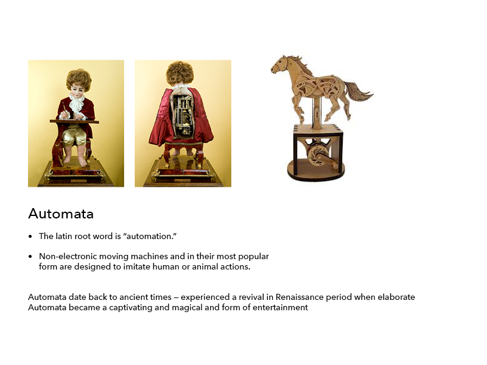
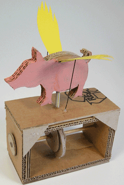
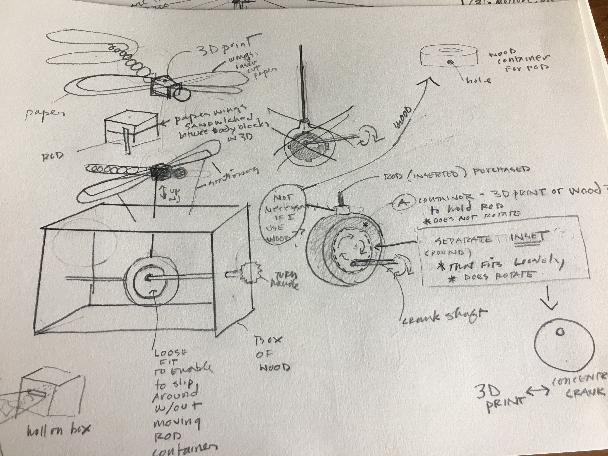
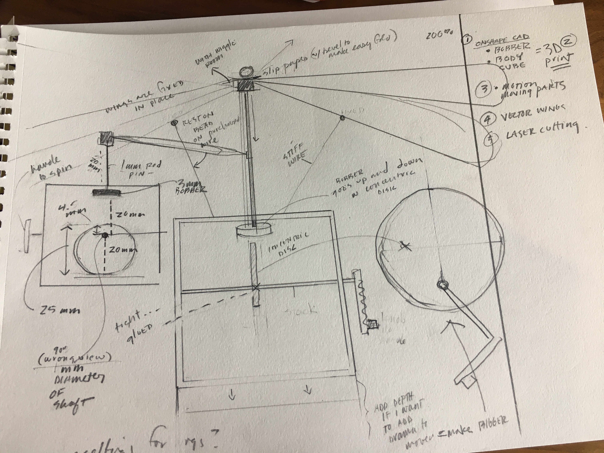
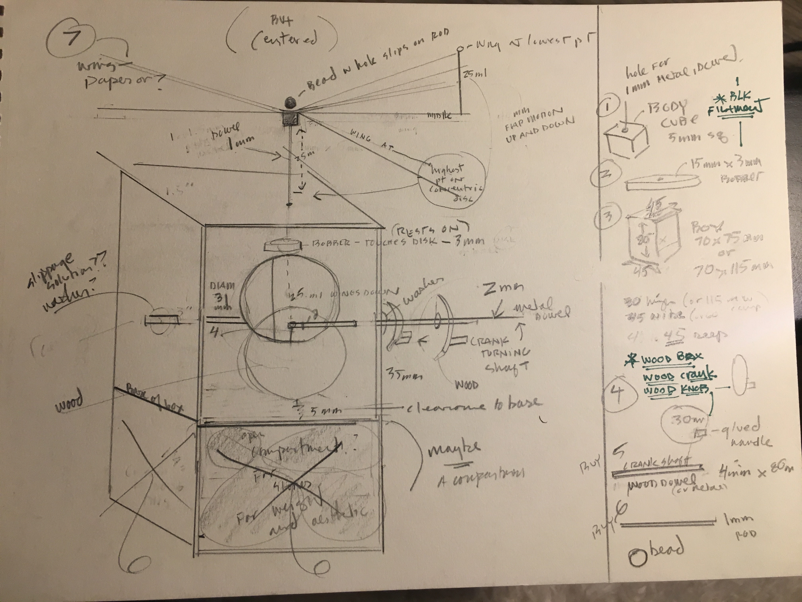
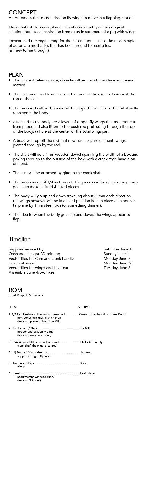

Final Project
For my final project I designed an Automata.


INSPIRATION & GOAL
I was inspired by a rustic example of an Automata of a pig with wings. My goal is to adapt
the same principles to create my an Automata featuring dragonfly wings that appear to flap by
the turn of a crank.
RESEARCH & SKETCHING A PLAN
With no engineering in my background this required me to analyse the simple mechanics
required to cause an upward/downward motion. I would also have to create housing for the mechanism,
and the 'thing' to be moved. I worked out solutions by sketching out plans, also looking up and
referencing mechanics creating Automata.


MOTION
• I first attempted a mechanism that had 3 parts, a round "container" to hold the steel
rod in place that did not rotate, with a offset cam/cog inserted inside attached to a shaft
which rotated when cranked.
• I shifted to a more simple solution shown in the above sketch: basically a "bobber" connected to
the rod, rests on top of an offset cam which is fixed to a shaft and turned by a crank.
DESIGN
After studying dragonfly visuals, I decided I did not want a realistic representation and made a
design that reduced the main body to a cube, making the wings and motion the main focus.


MAKING
GOAL: 3D print the body cube and the bobber that will be fitted to the base of the steel rod.
• I have a steel rod is roughly 1.8 mm thick (sourced from Hobby Town)
• In Rhino I make the bobber by creating a circle 10mm in diamter that I extruded and cap. This seems
large enough to rest on a 3mm thick cam. I Then create a solid cylinder with dimaeter of 1.20
where the rod will fit in place.
With printing it I discover the hole isn't large enough, which informs the aperture I apply to the body-cube.
• In Rhino I turn a mesh cube into a solid cube by extruding and capping a rectangle. Then create
a solid cylinder with dimaeter of 1.30, where the rod will be inserted. Again, when printing the hole
is not large enough. I end up drilling both a bit wider, the result is a loose fit which I think I can
make work.
GOAL: Lasercut Paper Wings. • I plan to use Adobe Illustrator and hope to source a vector file for lace wings online. I hoped to lasercut
a very delicate pattern and adapted this vector file of wings by adding a solid area for fitting them
onto the rod in "spindle" fashion. These were veto'd by the Mill staff, for being impossibly fine and burning
voted likely to burn up when lasercut.
I determine I have to create my own pattern and do some more online research for inspiration.
GOAL: Lasercut wood fitted box made of 1/8" Alder
From a standpoint of time, I take the advice of a classmate and create a pattern with the help of a box-maker.
program. I tailor it to my needs and test the fit on a piece of scrap:
Size of box: 70mm x 100mm x 70mm
Kerf: .007
Rule: 001
RESULT: The fit seemed good, but when I printed the Alder,the fit was loose. A kerf issue. Sad.
REVIEW & PROBLEM SOLVE At this point I have box issues and wing issues. I go back to sketch, re-assess and problem solve.
< While the box pieces are a fail as a whole, they're actually very helpful for seeing the project as a whole.
• I decide to change the dimensions to allow more room for the motion of the offset cam.
• I decide to test a .08/.09 kerf.
• Researching possible alternatives to paper wings that will work with my low fidelity attachment concept
• I decide to pick up some very thin wood that has flex to it.
• Brainstorming other ways to attach the wings I play with tiny magnets, and decide they will be useful
for exploring an alternative solution to "spindle"-attaching the wings.
My to-do list at this point involves a trip to Artist & Craftsman:
• Paperclip thickness wire to support wings.
• Thin wood and paper stock for wings...Ask about super thin acrylic?
• 5mm or 3/8 inch wood dowel
•
NEXT MAKER STEPS
BOX: Adjust AI files and test for various Kerf to achieve a fit. Create a new pattern reflecting increased
height, adding hole for crankshaft.
CAM: Create pattern and make from same wood as box.
Crankshaft: Create knob or crank handle to fit on end of shaft, planning for wood but a large bead would be cool.
Create pattern for 4 wood washers to keep shaft from slipping side to side horizontally. Create a pattern

